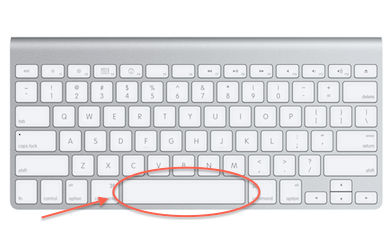

Teaching Point:
Today we will learn practice our Kid Pix Skills to make an About Me Poster.
Drawing with Shapes, Writing with Text
We have learned so much in Kid Pix. We have learned how to:
- Draw with the Pink Pencil Tool.
- Make Shapes with the Pink Pencil Tool.
- Write with the T Tool.
- Change the color and sizes of our letters.
- Change the Font of our letters.
- Use Caps Locks to make Capital Letters.
- Use the Delete Key to Erase Letters.
Now we are going to put all of our skills together to make an About Me Page. This project will be different, because instead of getting text and changing its color, size, or font, you will be writin your own text. You will write about yourself for an About Me Page. The one thing you need to remember when writing a sentence in Kid Pix is to use the Spacebar to make a neat space in between each word.
Today's Assignment
In Kid Pix, use the Shapes and Drawing Tools to make a picture of yourself, and then use the T Tool to write “My name is ” and your name.
Extension Activity
Use the T Tool to write 1 or 2 more sentences about what your favorite things to do are:)
Project Rubric
Back to Typing Sites